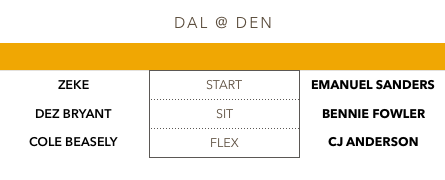
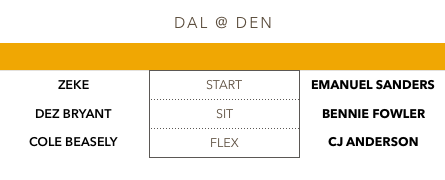

Texans vs. Bengals
DeAndre Hopkins was predictably peppered with targets, and while he was rather inefficient (7 catches for 73 yards on 13 targets) I am confident in him going forward. As Deshaun Watson becomes more confident and his rapport builds with Hopkins, there should be some big production coming for the Clemson product.
Right now is a prime time to buy low on A.J. Green. If you can find an owner that is panicking after another mediocre outing, go get him as quickly as you can. Even at his “worst” he is getting you 60-70 yards each game, and the Bengals eventually have to score a touchdown right? When they do, he will be the biggest beneficiary and I am not worried one bit about Green.
On the opposite end of the spectrum, I would be looking to sell Lamar Miller. He was once again pedestrian on the ground, and didn’t sniff a touchdown. With D’Onta Foreman getting more carries and being more active in the offense, I don’t think Miller will come anywhere close to providing the 2nd to 3rd round value that you had to take him at.
Dolphins vs. Chargers
Jay Ajayi was every bit the workhorse back that we predicted him to be, and was very impressive in his first regular season game. Rushing for over 120 yards on 28 carries, Ajayi could be this year's DeMarco Murray. He is one of the safest bets in an era where there aren’t many of them.
As a fan here, congrats to Antonio Gates for breaking the Tight End touchdown record. He has had a remarkable career and has always played with respect and toughness that I will always appreciate. His protege Hunter Henry caught 7 balls for 80 yards and bounced back nicely from a tough week 1. I am excited to see what he does in week 3.
I was a bit worried about Jarvis Landry this year. He had a new quarterback in Jay Cutler and an emerging DeVante Parker, but he saw 15 targets, catching 13 of them for 80 yards. He should once again be a PPR machine, but I like Parker for the touchdown upside in Standard going forward.
Jets vs. Raiders
As long as Josh McCown is playing behind center, Jermaine Kearse is an interesting weekly flex play. WIth 3 TD’s in two games now, Kearse is the preferred option in an offense that will be throwing a lot as it will be playing catch up all year. You could do much worse at the flex position right now.
Michael Crabtree is proving once again to be an elite WR2 in this league and those who doubted him again this offseason (I am guilty of this) were just flat out wrong. 6, catches 80 yards and 3 TD’s are lines we expected from Amari Cooper, and Crabtree now looks like the preferred target in that Raiders offense.
This is your weekly stay away from the Jets running back segment. They are splitting carries evenly, and with little touchdown upside, I see no benefit in having either Matt Forte or Bilal Powell in your lineup.
49ers vs. Seahawks
I’m continuing to be patient with Russell Wilson, but if he struggles again at Tennessee in week 3, I will be concerned with him moving forward. That offensive line is horrendous, and they are going to have to figure some things out if they are to get back to their explosive ways.
Carlos Hyde had a tremendous game, rushing for over 120 yards and being actively involved in the passing game. If Bryan Hoyer can get anything going in the passing game and opens those running lanes up even more for Hyde, he could be in line for a huge season.
WIth Eddie Lacy being a surprise scratch and Thomas Rawls available, many thought he would be the guy. But it now appears that Chris Carson is that guy, and has looked powerful while doing it. Running behind that line leaves a lot to be desired, but as a waiver wire pickup Carson could prove valuable to fantasy teams from this point on.
Browns vs.Ravens
Javorious “Buck” Allen out-touched Terrance West in both the rushing and passing game, and is clearly the most effective back in this offense. A dynamic dual-threat running back with a quarterback who loves to check down, Allen could be on his way to a RB2 level season.
If DeShone Kizer continues to miss playing time, then Kevin Hogan should continue to target Duke Johnson Jr. and his usage should justify a weekly flex option moving forward if that’s the case.
Bills vs. Panthers
With Greg Olsen likely to miss a significant time with a broken foot, Cam Newton is best used as a matchup dependent QB2. With his rushing total a fraction of what it once was (only 27 yards in week 2), he won’t provide enough value through the air to be your QB1.
Christian McCaffrey finished with 10 yards on 8 carries, but should provide enough value in the passing game (34 yards on 4 catches) to be a weekly RB2 and a flex play in standard.
I still like Tyrod Taylor as a sleeper QB despite the rough start. He will produce enough rushing (8 carries, 55) to make up for his passing deficiencies, and should still be fine in matchups with plus defenses.
Cardinals vs. Colts
Carson Palmer’s stats ended up looking pretty good, but he had to play catch up to get the Cards into overtime vs. the colts (who were torched by Jared Goff by the way). He did not look great, and if it takes him overtime to amass 15+ fantasy points against the Colts then it’s not looking too good for him.
Jack Doyle seems to be Jacoby Brissett’s favorite weapon in this Colts offense (8 catches for 79 yards), and as long as Brissett is in at QB, Doyle should be a weekly starter going forward.
Titans vs. Jaguars
DeMarco Murray only got 9 carries on Sunday, and after the game it was revealed he was dealing with a hamstring injury. This opened the door for Derrick Henry (14 carries, 92 yards and a TD) and he was very impressive. At the very least he will continue to eat into Murray’s carries and could be entering into weekly flex consideration.
14 carries for 40 yards might be a line we see a few more time for Leonard Fournette. Blake Bortles was horrendous in this game (what’s new?) and defenses will continue to key in on Fournette. He is talented enough and active enough in the passing game to be just fine, but he will have some games like this. Just hope he keeps getting into the end zone.
Marcus Mariota was again not great (215 yards, 1 TD, 1 INT), and has a tough week 3 matchup with the Seahawks coming to town. Once this rough stretch is over though, I like Mariota and think some positive regression is on the way.
Eagles vs. Chiefs
Kareem Hunt continues to dazzle in his rookie campaign, amassing 81 yards and 2 TD’s on the ground and an additional 28 yards through the air. He is a weekly RB1 and could be on his way to winning some 2017 fantasy leagues.
The Eagles have a non-existent running game through the first couple of weeks, which means Carson Wentz will be throwing a ton, and I like him as a weekly top 10 QB moving forward.
Speaking of that horrible Eagles running attack (107 total yards in week 2), LeGarette Blount is probably droppable at this point, and outside of Sproles in a PPR league, no one in that backfield is worth owning, let alone starting.
Patriots vs. Saints
Tom Brady bounced back in a large way on Sunday, throwing for 450 yards and 3 TD’s. Granted, it was against a Saints defense that was lit up by Sam Bradford last week, but it was encouraging to see the Pats get back on track.
Adrian Peterson is borderline droppable at this point as he hasn’t amassed over 40 yards in either of 2 games so far. Father time might have finally caught up with AP.
While everyone else was catching touchdowns and amassing yardage from Tom Brady, Brandin Cooks finished with 2 catches for 37 yards. I think he is an interesting buy low target, and would see if I can get him on the cheap. The explosive games are coming.
Vikings vs. Steelers
If Sam Bradford continues to miss games, Stefon Diggs (27 yards) and Adam Thielen (44 yards) are probably best suited as flex plays. Let’s hope Bradford is able to suit up in week 3.
Martavis Bryant shook off some week 1 rust to the tune of 91 yards and a touchdown. As this offense heats up, look for some more big games coming from Bryant.
Bears vs. Buccaneers
Jordan Howard only say 9 carries for 7 yards, but has been dealing with an injured shoulder (was seen in an arm sling after the game). If he forced to miss any time, Tarik Cohen (8 catches in week 2) enters RB2 category as an elite pass catching running back with enough between the tackles burst to be productive.
Jacquizz Rodgers was not very efficient with his 19 carries, but 67 yards and a touchdown are perfect for a weekly flex play. The volume should justify a weekly start at least until Doug Martin comes back from suspension.
Mike Evans (97 yards and a TD) has officially entered the Elite WR1 tier, and *Hot Take Alert* might be even more valuable that Julio Jones and Odell Beckham going forward.
Cowboys vs. Broncos
C.J. Anderson (150+ yards and 2 TD’s) looked excellent on Sunday, running with burst and being a force in the passing game. If he can stay healthy and the offensive line continues to block well, I like him as a high end RB2 moving forward.
Dez Bryant saw 16 targets, yet caught only 7 of those for 59 yards. He did score a touchdown though, and I think this was just a tough matchup for the Cowboys offense all together. Better days are ahead for the stud receiver.
Trevor Siemian looked great on Sunday, finishing with 230 yards, 4 TD’s, and a 116.0 passer rating. I think this was more a statement on the Cowboys lackluster defense than Siemian’s ability. He is not throwing the ball deep at all, and I still don’t project much value outside of 2 QB leagues moving forward.
Redskins vs. Rams
Todd Gurley ran with the power and patience that saw him as a top-5 pick last year. Averaging 5.5 YPC and a touchdown along with 48 yards and a touchdown through the air, Gurley looks to be finding his elite form once again.
“Fat” Rob Kelley looked great Sunday (12 carries for 78 yards) until he went down with an injury. Semaje Perine came in and got 21 carries, but only turned that into 67 yards. If Kelley misses time, I think Perine does offer some interest value as a volume flex play in week 3.
Sammy Watkins only received 2 targets on Sunday. He caught both for 30 yards, but if he doesn't get more looks his way, I can’t justify having him in your lineup every week.
Packers vs. Falcons
Ty Montgomery was once again effecting in week 2, amassing 110 yards and 2 total touchdowns. He is out there on all 3 downs, and regardless of matchup will be a top-12 RB for me moving forward.
Tevin Coleman ran well, but once again was dependent on a goal-line touchdown to be a startable option. The touchdowns won’t always be there and when they aren’t you won’t be happy having him in your lineup.
Lions vs. Giants
Evan Engram was the lone bright spot on a tough night for the Giants offense. He saw 7 targets, catching 4 of them for 49 yards and a touchdown. With the tight end landscape being the way that it is, he is probably a startable weekly option.
Ameer Abdullah ran well (86 yards, 5.1 YPC) against a stout Giants defensive line. He will still give up carries and third-down work to Theo Riddick, but this was an encouraging sign for Abdullah.
Those that thought Kenny Golladay would continue his hot week 1 start saw him crash hard back to earth with 1 catch for 8 yards. He still has plenty of talent and good games will be there, but it will be impossible to predict when.


 
